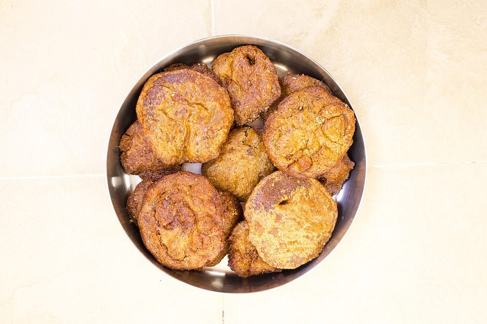

Adhirasam
jaggery and rice flour discs fried dark and dense, the Diwali sweet that takes practice

Start the day before. The resting alone is 8 hr, against 70 min of actual work.
Contains: sesame
Ingredients
Quantities for 15.
- 400g, soaked 3 hours, dried and ground Ricethe flour must retain a little moisture, which is why it is ground fresh
- 300g, dark Jaggery
- 6 pods, seeds ground Cardamom
- 1/2 tsp Dry Ginger Powder
- 1 tbsp Sesameoptional
- 100ml Water
- 500ml for deep frying Neutral Oil
Cookware
stovetop, kadhai
Checked against the ingredient list for ten allergens: milk, egg, fish, crustaceans, tree nuts, peanuts, sesame, mustard, soy and gluten. Brands vary, so read the label on anything new to you.
Before you start
- The dough must rest. Overnight is normal and three days is better; the flour needs time to drink the jaggery syrup.
- The syrup stage decides the texture. Take it to soft-ball and no further.
Method
- Melt the jaggery in the water, strain out the grit, and boil to the soft-ball stage.A drop in cold water should form a soft ball you can roll. A thread stage gives hard adhirasam.
- Take off the heat and stir in the rice flour, cardamom, dry ginger and sesame while hot.
- Cover and rest at least overnight, up to three days. The dough softens and darkens as it sits.
- Pat portions into 7cm discs between greased plastic sheets.
- Fry one at a time on medium, spooning oil over, until deep brown, about 3 minutes.
- Press each between two flat spoons as it leaves the oil to squeeze out the excess.
Storage
Keeps 2 weeks in an airtight tin at room temperature and hardens slowly, which is expected.
Nutrition Good estimate
Low protein: 2 g a serving, 3% of the calories
| Per serving59 g | Per 100 g | |
|---|---|---|
| Calories | 218 kcal | 372 kcal |
| Protein | 1.9 g | 3 g |
| Carbohydrate | 41.3 g | 70 g |
| of which sugars | 20.0 g | 34 g |
| Fibre | 0.1 g | 0 g |
| Fat | 5.1 g | 9 g |
| of which saturated | 0.6 g | 1 g |
| of which unsaturated | 4.3 g | 7 g |
Ingredients given to taste count as zero, so the real figures run a little higher. Nearest database match used for jaggery. Estimated from raw ingredients using USDA FoodData Central.
More like this: Vegan Indian recipes · Vegetarian Indian recipes · Gluten-free Indian recipes · Dairy-free Indian recipes · Tamil Nadu recipes
Times, yields, allergens and nutrition are guidance. Use your own judgement on doneness and on storing. More in About.